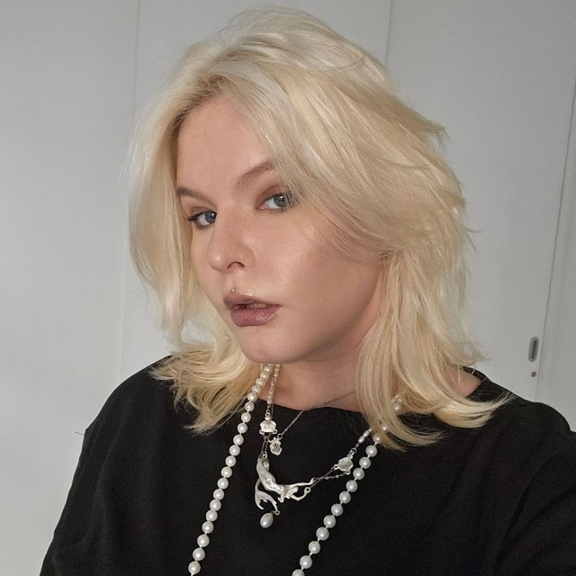

Independent designerKSENIA
KSENIA
ZARETSKAYA
I build visual identities, digital experiences and expressive systems for brands that want to be remembered.

Selected workA selection of
A selection of
visual worlds.


ServicesDesign with
Design with
direction.
01Graphic DesignCampaigns, editorial, social and visual communication.
02BrandingIdentity systems, art direction and brand language.
03Web / UIWebsites and interfaces with a strong visual point of view.
043D / ContentVisual experiments, 3D objects and content systems.
ProcessClear process.
Clear process.
Strong result.
01 / DISCOVER
Context
Goals, audience, references and the problem behind the brief.
02 / DEFINE
Direction
Concept, mood, visual language and a focused design route.
03 / DESIGN
System
Identity, layouts, interfaces and details built as one system.
04 / DELIVER
Launch
Polished final assets prepared for real-world use.
About
I’m Ksenia — an independent designer focused on turning ideas into distinctive visual experiences.
My work moves between identity, digital design, social content and visual experimentation.
More about me →